5세학습지 추천 BEST 6, 한글·수학·영어 학습지 비교 및 선택 가이드
5세 아이에게 어떤 학습지가 잘 맞을까요?
5세학습지를 알아보는 부모님들이 가장 많이 고민하는 부분은 한글 공부를 언제 시작해야 하는지, 수학과 영어도 함께 배워야 하는지, 종이 학습지와 태블릿 학습 중 무엇을 선택해야 하는지 일 것입니다.
현재 유아 학습지로 많이 비교하는 브랜드에는 엘리하이키즈, 윙크, 구몬, 눈높이, 재능교육, 밀크T아이 등이 있습니다.
각 브랜드는 제공하는 과목과 학습 방식, 선생님의 관리 형태에 차이가 있기 때문에 아이의 현재 발달 수준과 학습 성향을 먼저 확인하는 것이 중요합니다.
이번 글에서는 5세학습지 추천 브랜드 6곳의 특징과 함께 한글 수준, 과목, 학습 방식, 월 예산에 따른 선택 기준을 정리했습니다.
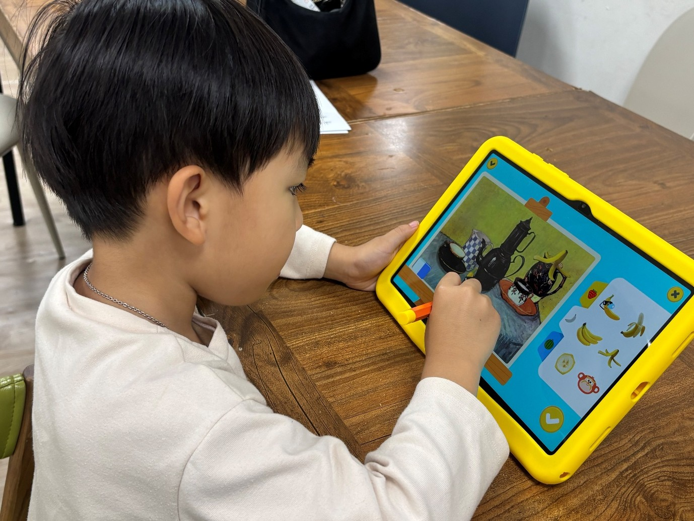
1. 5세학습지, 언제부터 시작하는 것이 좋을까요?
5세는 한글과 숫자에 관심을 보이기 시작하고, 그림과 소리, 놀이를 통해 새로운 개념을 익혀가는 시기입니다.
다만 같은 5세라도 아이마다 학습 수준에는 차이가 있습니다.
아직 글자를 잘 모르는 아이도 있고, 자신의 이름이나 익숙한 단어를 읽는 아이도 있습니다. 간단한 문장을 읽을 수 있지만 글자를 직접 쓰는 것은 어려워하는 경우도 있습니다.
따라서 5세학습지를 선택할 때는 아이의 학습 상황에 맞는 단계로 배울 수 있는지 확인하는 것이 중요합니다.
처음 학습을 시작한다면 하루 10~15분 정도 즐겁게 참여할 수 있는 분량부터 시작해 보세요.
아이가 집중할 수 있는 시간에 맞춰 학습량을 조절하고, 한글이나 수학을 놀이처럼 경험할 수 있도록 구성하는 것이 좋습니다.
2. 5세학습지 추천 브랜드 6곳 비교
5세 유아가 이용할 수 있는 대표적인 학습지의 특징을 정리했습니다.
| 브랜드 | 주요 학습 분야 | 대표적인 학습 방식 |
|---|---|---|
| 엘리하이 키즈 | 한글·국어, 수학, 영어, 탐구·코딩·과학, 한자, 독서 등 | 유아 전용 태블릿과 지면교재 연계, 전문선생님의 1:1화상 수업과 관리 |
| 윙크 | 한글·국어, 수학, 영어 | 전용 학습기와 지면 학습지 연계 |
| 구몬 | 한글, 수학, 영어 등 | 단계별 교재, 방문·화상 등 상품별 관리 |
| 눈높이 | 국어, 수학, 영어 등 | 수준별 교재, 방문·센터·디지털 학습 |
| 재능교육 | 한글, 수학, 영어 등 | 수준별 지면 학습과 교사 관리 |
| 밀크T아이 | 한글, 수학, 영어 등 | 유아 태블릿 기반 학습 콘텐츠 |
※ 학습 방식과 관리 형태는 브랜드별 선택 상품 및 계약 조건에 따라 달라질 수 있습니다.
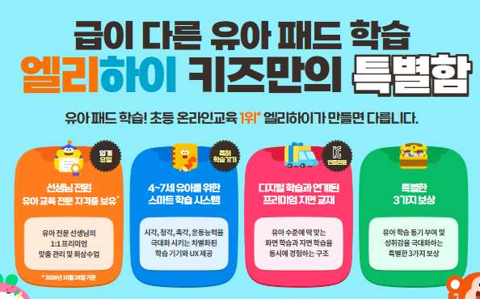
① 엘리하이 키즈 – 한글·수학·영어 등 전과목을 배우는 유아 종합학습지
엘리하이 키즈는 4세~예비초등을 대상으로 한 전 과목 스마트 학습지이며 전용 태블릿을 통해 전과목 학습이 가능합니다.
학습 영상을 보고 동요를 따라 부르거나, 전용 터치 펜으로 패드 화면을 터치하는 등 참여형 학습 활동을 할 수 있습니다. 또한 정기적으로 보내주는 지면교재를 활용해 선을 긋거나 글자 쓰는 연습을 하며 복습이 가능합니다.
5세 아이의 한글 수준에 따라 학습 단계를 선택할 수 있다는 장점도 있습니다.
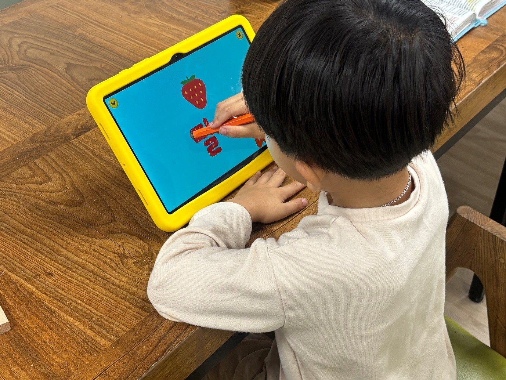
한글·국어 학습
• 사물과 낱말을 연결하는 말놀이 활동
• 통글자부터 자음과 모음의 원리까지 단계별 학습
• 글자 읽기와 쓰기, 어휘·문장 학습
• 한글을 익힌 이후 독서와 기초 문해력 학습으로 확장
한글을 처음 접하는 5세라면 그림과 소리를 활용한 말놀이부터 시작할 수 있고, 글자를 어느 정도 아는 아이라면 읽기와 쓰기 활동을 이어갈 수 있습니다.
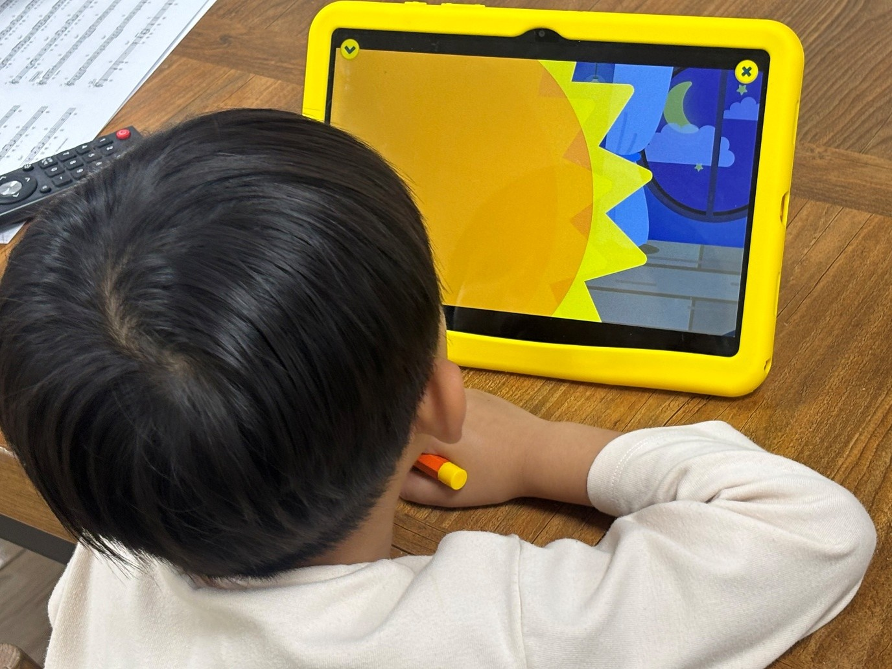
수학 학습
수학은 수와 수량, 분류, 규칙, 도형 등 유아기에 필요한 기초 개념을 다룹니다.
아이들의 눈높이에 맞춘 이야기로 수학 개념을 쉽고 재미있게 익히고, 다양한 놀이형 활동과 문제풀이를 통해 배운 내용을 자연스럽게 이해하고 활용할 수 있도록 구성되어 있습니다.
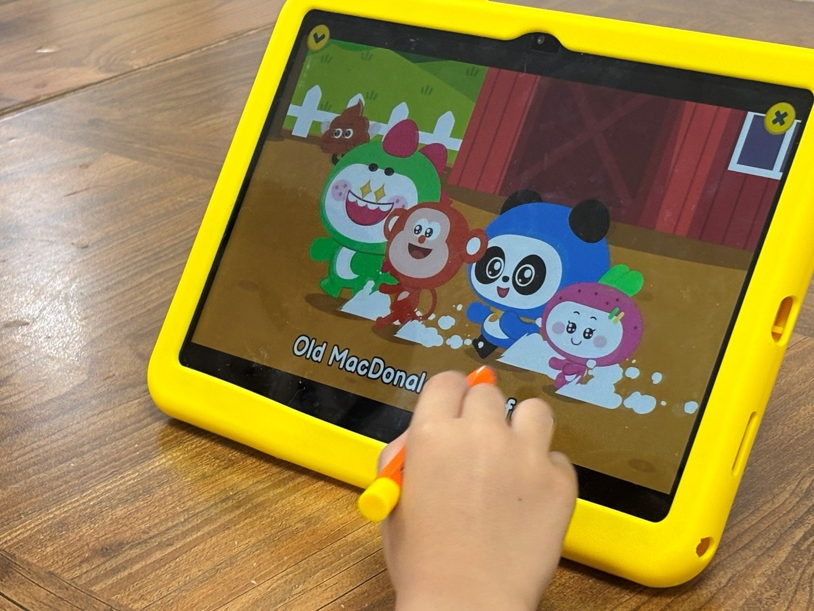
영어 학습
영어는 알파벳과 파닉스, 영어 동요, 원어민 음성 듣기, 따라 말하기 등 유아 수준에 맞는 콘텐츠를 제공합니다.
영어를 처음 배우는 아이도 소리를 듣고 따라 하면서 기초 표현을 접할 수 있습니다.
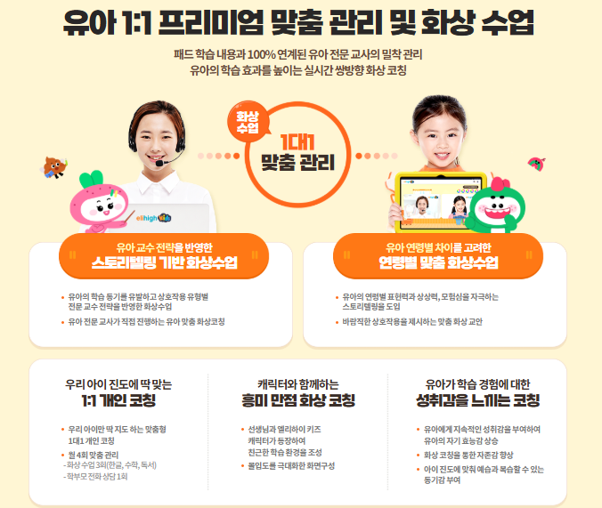
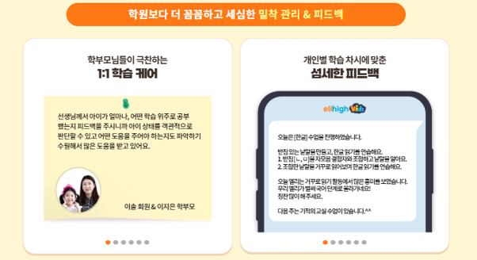
학습관리 방식
엘리하이 키즈는 유아교육 전문가인 선생님의 1:1 화상관리도 제공하는데요.
월별로 한글·수학·독서 관련 학습 관리 3회와 학부모 상담 1회로 구성돼 있습니다.
무엇보다 '오늘의 학습'이 매일 자동으로 스케줄링 되니 부모가 스케줄을 세워주지 않아도 아이 스스로 학습을 이어갈 수 있습니다.
엘리하이 키즈 5세 학습지는 이런 가정에서 살펴볼 만합니다.
• 5세 한글 공부를 처음 시작하는 경우
• 한글과 수학, 영어를 함께 배우고 싶은 경우
• 태블릿과 종이 학습지를 병행하고 싶은 경우
• 유아 교육 전문가인 선생님의 정기적인 학습관리를 원하는 경우
엘리하이 키즈는 7일 무료체험을 통해 아이의 반응을 직접 확인할 수 있습니다.
https://mkids.mbest.co.kr/ad/?ptname=C4216
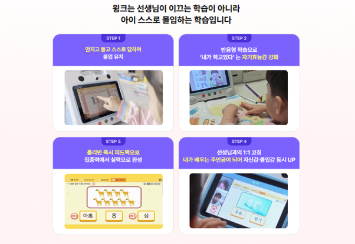
② 윙크 – 학습기와 종이 학습지를 연계한 유아학습
윙크는 유아부터 초등 저학년까지 이용할 수 있는 학습 프로그램입니다.
한글·국어, 수학, 영어 등을 다루며 전용 학습기와 종이 학습지를 연계하는 방식으로 운영됩니다.
디지털 콘텐츠를 통해 개념을 익힌 뒤 지면 학습지에서 직접 쓰거나 문제를 풀어보는 활동을 할 수 있습니다.
학습기와 종이 학습을 함께 활용하려는 가정에서 비교할 수 있는 브랜드입니다.
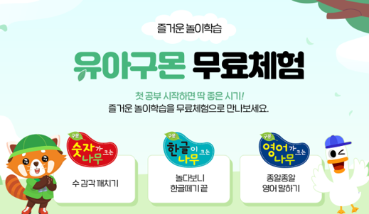
③ 구몬 – 단계별 지면 학습 중심
구몬학습은 개인별 학습 능력에 맞춘 단계별 교재를 사용하는 학습 프로그램입니다.
한글, 수학, 영어 등 과목별 학습을 선택할 수 있으며, 작은 단계로 구성된 교재를 반복적으로 학습하는 방식이 특징입니다.
상품에 따라 방문학습이나 화상학습 등 관리 방식을 확인할 수 있습니다.
종이 교재로 일정한 분량을 학습하려는 경우 살펴볼 수 있습니다.

④ 눈높이 – 아이의 수준에 맞춘 과목별 학습
눈높이는 아이의 학습 수준을 기준으로 진도를 설정하는 교육 프로그램입니다.
국어, 수학, 영어 등 다양한 과목을 운영하며 지면교재를 활용한 학습과 디지털 학습 상품을 제공합니다.
방문학습, 센터 및 공부방 등 학습 형태는 상품과 지역에 따라 달라집니다.
5세 아이의 현재 수준에 맞춰 특정 과목을 학습하고 싶은 경우 비교할 수 있습니다.

⑤ 재능교육 – 수준별 교재와 자기주도학습
재능교육은 아이의 학습 수준에 따라 진도를 설정하는 교재 중심 학습 프로그램을 운영합니다.
한글, 수학, 영어 등 과목별 프로그램이 있으며 단계별 교재를 활용합니다.
지면 학습과 교사 관리를 중심으로 구성되어 있고, 세부적인 수업 형태는 선택하는 프로그램에 따라 확인할 수 있습니다.
특정 과목의 학습을 원하는 가정에서 살펴볼 수 있습니다.

⑥ 밀크T아이 – 유아 태블릿 기반 학습
밀크T아이는 유아전용 스마트학습 프로그램입니다.
태블릿을 활용해 한글, 수학, 영어 등의 학습 콘텐츠를 제공하며 영상과 다양한 디지털 활동을 통해 기초 개념을 익힐 수 있습니다.
유아의 학습 수준과 연령에 따른 콘텐츠를 확인할 수 있으며, 교재 및 관리 서비스의 세부 구성은 선택 상품에 따라 달라집니다.
디지털 학습을 선호하는 아이에게 비교 대상이 될 수 있습니다.

3. 5세 한글학습지, 아이의 현재 수준에 따라 선택하세요
5세학습지 추천 정보를 찾을 때 가장 먼저 확인해야 할 부분은 아이의 한글 수준입니다.
① 아직 한글을 잘 몰라요
글자를 처음 접하는 단계라면 그림과 소리, 동요 등을 통해 한글에 친숙해지는 활동부터 시작할 수 있습니다.
익숙한 사물의 이름을 듣고 그림과 연결하거나 글자 모양을 알아보는 활동이 해당됩니다.
② 글자는 조금 알아요
자신의 이름이나 익숙한 낱말을 알아보는 아이라면 자음과 모음의 소릿값, 글자 조합, 간단한 낱말 읽기 등을 연습할 수 있습니다.
읽기 활동과 함께 선 긋기, 글자 따라 쓰기 등을 병행해도 좋습니다.
③ 간단한 단어와 문장을 읽어요
짧은 문장을 읽을 수 있다면 어휘와 독서 활동으로 학습 범위를 넓혀볼 수 있습니다.
문장을 읽고 의미를 이해하거나 그림책의 내용을 말로 표현하는 활동도 가능합니다.
엘리하이 키즈처럼 한글 입문부터 읽기·쓰기, 어휘·독서까지 단계별로 구성된 학습 프로그램은 현재 수준과 이후 학습 과정을 함께 살펴볼 수 있습니다.
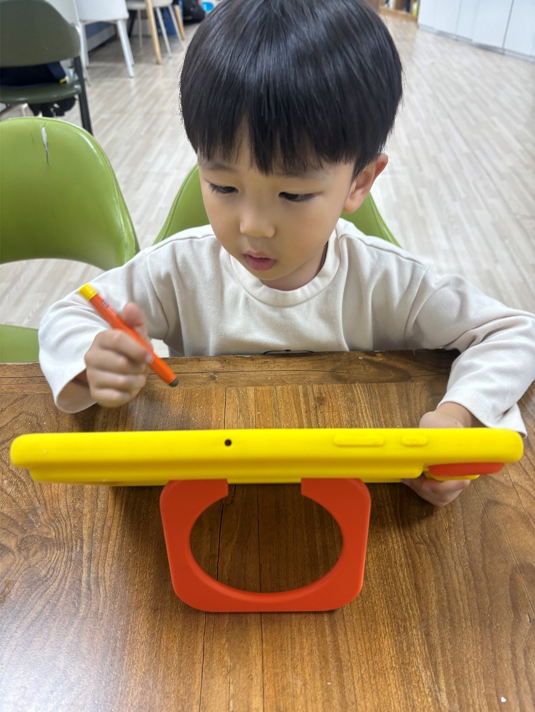
4. 한글, 수학, 영어 중 어떤 과목을 선택해야 할까요?
5세학습지는 아이의 관심과 가정의 학습 목표에 따라 과목을 선택하는 것이 좋습니다.
| 학습 목표 | 살펴볼 내용 |
|---|---|
| 한글 위주 | 낱말 인지, 자음·모음, 읽기·쓰기 |
| 수학 위주 | 수 세기, 수량 비교, 규칙, 도형 |
| 한글 + 수학 | 기초 문해력과 수 개념을 함께 학습 |
| 한글 + 수학 + 영어 | 세 과목을 짧은 분량으로 나누어 학습 |
한글에 관심이 많다면 한글 중심으로 시작할 수 있고, 숫자와 퍼즐을 즐기는 아이라면 수학 활동을 먼저 살펴봐도 좋습니다.
한글과 수학, 영어를 함께 배우고 싶다 하더라도 무리하게 하루에 세 과목 학습을 모두 진행할 필요는 없습니다.
무엇보다 아이의 집중 시간에 맞춰 과목을 나누고, 학습량을 조절해 꾸준히 공부할 수 있는 환경을 만들어주는 것이 우선이 되어야 합니다.
그럼 점에서 엘리하이 키즈 유아 종합 학습 프로그램은 여러 과목을 하나의 학습지로 배울 수 있고 아이의 속도에 맞춰 차근차근 학습할 수 있다는 장점이 있습니다.
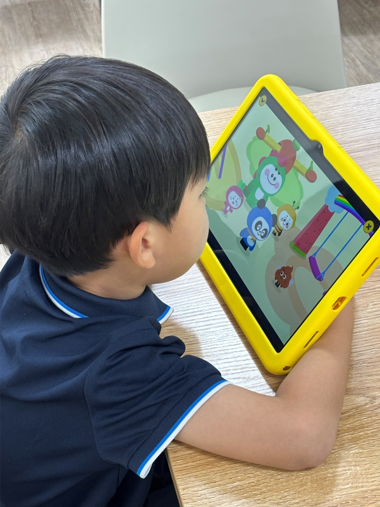
5. 종이 학습지와 패드학습, 무엇이 다를까요?
5세학습지를 선택할 때는 학습 방식도 중요한 기준입니다.
[종이 학습지]
연필을 잡고 선을 긋거나 글자를 쓰는 등 직접 손으로 활동하는 학습입니다.
구몬, 눈높이, 재능교육 등의 지면교재 중심 프로그램을 살펴볼 수 있습니다.
[패드학습]
영상과 음성, 터치 활동 등을 활용해 학습하는 방식입니다.
엘리하이 키즈, 윙크, 밀크T아이 등의 유아 디지털 학습 프로그램을 비교할 수 있습니다.
[선생님 방문 수업]
정해진 일정에 선생님과 만나 학습 진도를 확인하는 방식입니다.
구몬, 눈높이, 재능교육 등의 상품에서 방문학습 여부를 확인할 수 있습니다.
[화상 학습관리]
화상으로 선생님과 소통하고 학습 상황을 확인하는 방식입니다.
엘리하이 키즈는 유아교육 전문가인 담임 선생님이 정기적으로 1:1 화상관리를 해줍니다.
학습 방식을 선택할 때는 아이가 어떤 활동에 더 오래 집중하는지, 부모가 어느 정도 학습에 참여할 수 있는지도 함께 고려해 보세요.
6. 5세학습지 월 비용은 얼마나 생각해야 할까요?
5세학습지 가격은 브랜드뿐 아니라 선택하는 과목 수, 학습 기간, 기기 이용 여부, 선생님 관리 서비스 등에 따라 달라집니다.
따라서 단순히 월 이용료만 비교하기보다 실제 계약에 포함되는 학습 구성을 확인하는 것이 필요합니다.
월 예산을 기준으로 다음 사항을 점검해 보세요.
• 월 3만 원 미만: 희망하는 과목의 단과 상품이나 교재 중심 학습의 실제 이용 가능 여부
• 월 3만~5만 원: 과목별 이용료와 선생님 관리 포함 여부
• 월 5만~10만 원: 종합학습 구성, 학습기 제공 및 관리 서비스 포함 여부
• 월 10만 원 이상: 여러 과목의 학습 범위, 추가 서비스 및 전체 계약 비용
위 금액은 상품별 확정 가격이 아닌 예산을 나누기 위한 기준입니다. 해당 금액대에 모든 브랜드의 상품이 제공되는 것은 아니므로 실제 이용료는 공식 상담을 통해 확인해야 합니다.
또한 학습기 대여·구매 조건, 약정 기간 등을 확인해보는 것이 좋습니다.

7. 5세학습지 선택 전 확인할 4가지
5세학습지를 결정하기 전에 다음 네 가지 질문에 답해 보세요.
Q1. 아이의 현재 한글 수준은 어느 정도인가요?
• 아직 한글을 잘 몰라요.
• 글자는 조금 알아요.
• 간단한 단어와 문장을 읽어요.
Q2. 어떤 과목을 배우고 싶나요?
• 한글 위주
• 수학 위주
• 한글 + 수학
• 한글 + 수학 + 영어
Q3. 어떤 학습 방식을 선호하나요?
• 종이 학습지
• 패드학습
• 선생님 방문 수업
• 상관없어요.
Q4. 월 학습 예산은 어느 정도인가요?
• 3만 원 미만
• 3만~5만 원
• 5만~10만 원
• 10만 원 이상
이 네 가지를 먼저 정리하면 여러 학습지 중 어떤 브랜드를 알아보면 좋을 지 가닥이 잡힙니다.

8. 5세학습지 추천, 어떤 기준으로 선택하면 좋을까요?
Q. 한글을 전혀 모르는 5세에게는 어떤 학습지가 좋을까요?
한글을 처음 접하는 아이라면 글자와 소리를 연결하는 활동부터 시작할 수 있는 학습지를 살펴보세요.
엘리하이 키즈는 말놀이와 통글자 학습을 시작으로 자음·모음, 읽기·쓰기까지 이어지는 단계별 한글 콘텐츠를 제공합니다.
Q. 5세부터 한글, 수학, 영어를 모두 공부해도 될까요?
아이의 집중 시간과 흥미를 고려해 과목별 학습량을 조절한다면 가능합니다.
처음에는 짧은 시간 동안 한두 가지 활동에 참여하고, 아이가 익숙해지면 다른 과목으로 학습 범위를 넓혀볼 수 있습니다.
Q. 5세에게 종이 학습지와 태블릿 학습 중 무엇이 좋을까요?
아이의 학습 성향에 따라 선택이 달라집니다.
직접 쓰고 색칠하는 활동을 선호한다면 종이 학습지를, 영상과 소리·터치 활동에 관심이 많다면 태블릿 학습을 살펴볼 수 있습니다.
엘리하이 키즈는 디지털 학습과 지면 활동을 함께 제공하고 있어 태블릿으로 배운 개념을 종이 교재에서 직접 쓰고 풀어보며 복습할 수 있습니다.
Q. 5세학습지는 하루에 얼마나 공부하는 것이 좋을까요?
처음에는 하루 10~15분 정도를 출발점으로 삼고, 아이의 집중력과 반응에 따라 조절해 보세요.
하루에 무리한 양의 학습을 시키는 것 보다 아이가 즐겁게 참여하고 활동을 마무리할 수 있는 분량으로 꾸준히 공부하는 것이 더 효과적입니다.
Q. 5세학습지 중 무료체험이 가능한 곳은 어디인가요?
엘리하이 키즈는 7일 무료체험이 가능하고, 일부 브랜드도 체험 서비스를 제공하고 있습니다.
체험 기간과 제공 조건은 시점에 따라 변경될 수 있으므로 신청 전 공식 홈페이지에서 확인하는 것이 정확합니다.

9. 결론: 5세학습지, 아이의 수준과 학습 방식이 중요합니다
5세학습지 추천 브랜드로는 엘리하이 키즈, 윙크, 구몬, 눈높이, 재능교육, 밀크T아이 등이 있습니다.
종이 교재 중심의 반복 학습을 원한다면 구몬, 눈높이, 재능교육의 과목별 프로그램을 비교할 수 있습니다.
태블릿 기반의 유아 학습을 찾는다면 밀크T아이와 윙크도 살펴볼 수 있습니다.
한글·수학·영어를 함께 배우면서 지면교재 활용과 유아 교육 전문가인 선생님의 체계적인 화상관리까지 받아보고 싶다면 엘리하이 키즈가 적합할 수 있습니다.
엘리하이 키즈는 4세부터 예비초등을 위한 단계별 학습 콘텐츠를 제공하므로 5세부터 시작해 이후 학습 과정까지 살펴볼 수 있습니다.
무엇보다 중요한 것은 아이가 매일 부담 없이 학습에 참여할 수 있는 지입니다.
5세학습지를 결정하기 전에는 현재 한글 수준, 희망 과목, 학습 방식, 월 예산을 확인하고, 무료체험이나 상담을 통해 실제 학습 구성을 비교해 보시기 바랍니다.
참고: 각 브랜드의 공식 홈페이지 및 공개 학습 프로그램 안내를 바탕으로 작성했습니다. 상품 구성, 비용, 체험 및 관리 조건은 변경될 수 있습니다.